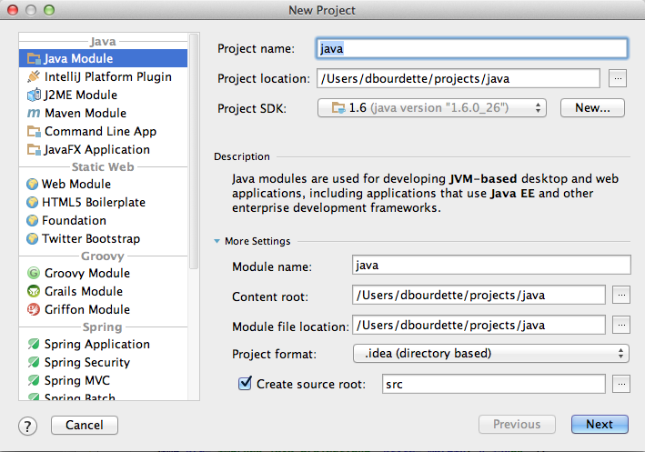
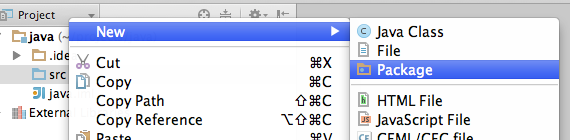
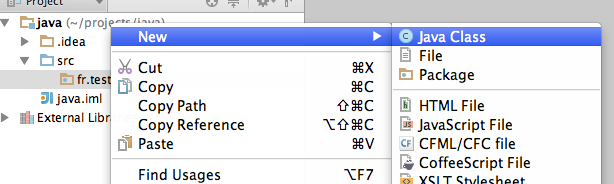
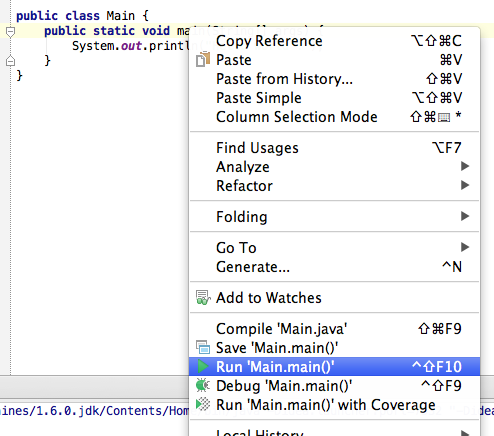
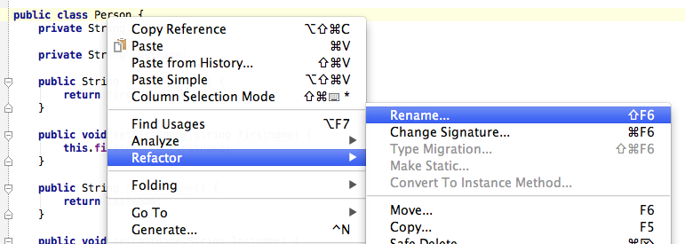

Un IDE est un environnement complet qui permet de travailler plus vite en regroupant de multiples outils de développement dans une même interface.
Intellij est développé par JetBrains qui maitient tout une suite de logiciels pour divers languages : php, python, ruby...
Intellij est un IDE qui existe en 2 versions : communautaire et ultimate.
La version communautaire est suffisante pour faire du java, du groovy ou du scala.
La version ultimate rajoute le web, jee et d'avantages de languages et plateformes (feature list).
Il assez peu souvent nécessaire d'installer des plugins car intellij arrive tout équipé.
Intellij n'est pas gratuit mais ses qualités justifient amplement un tarif qui n'est pas très élevé.
Les autres IDEs les plus utilisés sont :
Le but de ce tp est de se familiariser avec l'interface d'intellij.
Un projet est la structure de base. C'est tout ce qu'on voit dans la fenêtre.
Il définit un sdk et un niveau de compatibilité du language java (1.5, 1.6...).
Il contient 1 ou plusieurs modules. Un module contient des fichiers sources
Un module peut avoir ses propres dépendances et sa propre structure
Les préférences sont accessibles via le menu File > Other settings > Default Settings...
Elles sont aussi disponibles via l'icône de la barre d'outils ou bien via le raccourcis ⌘ ,
Elles permettent de régler beaucoup des aspects de l'IDE : formattage des sources, environnement java...
La définition des modules est accessible via l'icône . On peut y voir les librairies utilisées et la configuration des modules.
Afin de tester quelques fonctionnalités d'intellij, nous allons créer un projet java.
Un projet java se crée via le menu File > New Project... et en choisissant un module Java.
On entre un nom de projet "java" et on clique sur next.
Dans la sélection des technologies, on ne sélectionne rien, on clique juste sur finish.
Un nouveau projet "java" est donc disponible avec un module "java" dedans. Un répertoire src contiendra les sources java.
En faisant un clique droit sur le répertoire src, on peut créer le package fr.test
En faisant un clique droit sur le package fr.test, on peut créer la classe Person
On obtient le code suivant :
package fr.test;
public class Person {
}
On ajoute les attributs suivants dans la classe.
private String firstname; private String lastname;
Intellij est capable de générer les getters et setters pour ces attributs. Il suffit de faire un clique droit dans l'éditeur dans la classe et d'utiliser le menu Generate.
public String getFirstname() {
return firstname;
}
public void setFirstname(String firstname) {
this.firstname = firstname;
}
public String getLastname() {
return lastname;
}
public void setLastname(String lastname) {
this.lastname = lastname;
}
Les getters et setters sont aussi appelés accesseurs.
Les getters permettent de muter l'état interne de l'objet (mutators).
La méthode toString() donne une représentation litérale (chaine de caractères) d'un Object.
Elle sert principalement à faire du débug mais peut être utile pour l'affichage dans des cas simples.
Intellij peut également générer cette méthode via le menu contextuel
@Override
public String toString() {
return "Person{" +
"firstname='" + firstname + '\'' +
", lastname='" + lastname + '\'' +
'}';
}
Ces 2 méthodes marchent en couple et sont capitales.
Le contrat et le lien entre ces méthodes dépasse le cadre d'un simple exercice sur intellij mais une description détaillée est disponible dans le chapitre 3 de effective java
Les méthodes equals et hashCode permettent de comparer des objets 2 à 2. Elles sont particulièrement utiles pour des mécaniques de cache ou des tables de hash.
Elles sont difficiles à bien implémenter et une mauvaise implémentation peut être fatale.
Avec intellij, il suffit de demander la génération de ces méthodes via le menu contextuel.
@Override
public boolean equals(Object o) {
if (this == o) return true;
if (o == null || getClass() != o.getClass()) return false;
Person person = (Person) o;
if (firstname != null ? !firstname.equals(person.firstname) : person.firstname != null) return false;
if (lastname != null ? !lastname.equals(person.lastname) : person.lastname != null) return false;
return true;
}
@Override
public int hashCode() {
int result = firstname != null ? firstname.hashCode() : 0;
result = 31 * result + (lastname != null ? lastname.hashCode() : 0);
return result;
}
Les capacités de génération d'intellij vont bien au delà de ces simples exemples. Nous aurions pu faire tout ce code à la main et parfois cela est nécessaire.
Cependant, java est un language verbeux et chaque fois que cela est possible, il est bon de pouvoir compter sur l'IDE.
On va maintenant créer une classe avec une méthode main.
package fr.test;
public class Main {
public static void main(String[] args) {
}
}
C'est un point de départ obligé pour toute application java.
Afin de la tester un peu, on écrit dans la sortie standard (stdout).
System.out.println("Hello world !");
On peut lancer cette méthode via le menu contextuel de la classe.
On peut utiliser notre class Person depuis le main.
Person person = new Person();
person.setFirstname("alex");
person.setLastname("luthor");
System.out.println(person);
Le menu Debug permet d'exécuter le même code en placant des points d'arret et en maitrisant l'éxécution pas à pas.
Les IDEs java profitent du fort typage du language afin d'offrir de grandes capacités de refactoring.
Imaginons que nous souhaitions renommer la classe Person en People.
Un clique droit sur la classe et on accède au menu Refactor > Rename... qui permet de faire le changement de nom.
La classe main a été modifiée en fonction.
People person = new People();
person.setFirstname("alex");
person.setLastname("luthor");
System.out.println(person);
Encore une fois, les capacités d'intellij dépassent amplement cet exemple simple. Son éditeur de code et ses outils de refactoring sont très puissants.
Les capacités de navigation au sein de l'IDE sont nombreuses. Voici quelques façons de trouver ce que l'on cherche :
Par exemple, si on tape control-N puis "Peo", on peut ouvrir rapidement le fichier contenant la classe sans utiliser la souris.
Les raccourcis clavier sont indispensables afin d'être plus productif. En voici quelques uns :
Il est facile de trouver des listes de raccourcis sur le web. Par exemple pour windows / linux ou mac